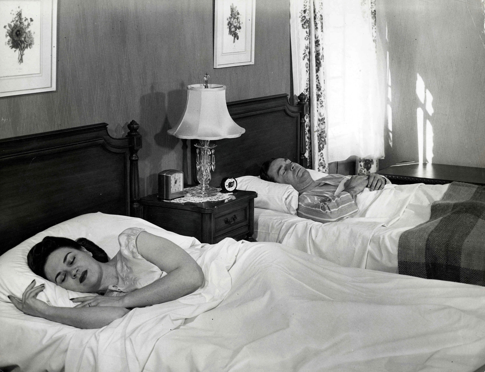

Figure 15.3
Attempts to censor material, such as banning books, typically attract a great deal of controversy and debate.
To fully understand the issues of censorship and freedom of speechA right granted to U.S. citizens in the First Amendment of the U.S. Constitution, whereby individuals have the right to speak their minds without fear of prosecution. and how they apply to modern media, we must first explore the terms themselves. CensorshipThe institution of suppressing or removing anything considered objectionable. is defined as suppressing or removing anything deemed objectionable. A common, everyday example can be found on the radio or television, where potentially offensive words are “bleeped” out. More controversial is censorship at a political or religious level. If you’ve ever been banned from reading a book in school, or watched a “clean” version of a movie on an airplane, you’ve experienced censorship.
Much as media legislation can be controversial due to First Amendment protections, censorship in and of the media is often hotly debated. The First Amendment states that “Congress shall make no law…abridging the freedom of speech, or of the press.”“First Amendment—Religion and Expression,” http://caselaw.lp.findlaw.com/data/constitution/amendment01/. Under this definition, the term “speech” extends to a broader sense of “expression,” meaning verbal, nonverbal, visual, or symbolic expression. Historically, many individuals have cited the First Amendment when protesting FCC decisions to censor certain media products or programs. However, what many people do not realize is that U.S. law establishes several exceptions to free speech, including defamation, hate speech, breach of the peace, incitement to crime, sedition, and obscenity.
To comply with U.S. law, the FCC prohibits broadcasters from airing obscene programming. The FCC decides whether or not material is obscene by using a three-prong test.
Obscene material has the following characteristics:
Material meeting all of these criteria is officially considered obscene and usually applies to hard-core pornography.Federal Communications Commission, “Obscenity, Indecency & Profanity: Frequently Asked Questions,” http://www.fcc.gov/eb/oip/FAQ.html. “Indecent” material, on the other hand, is protected by the First Amendment and cannot be banned entirely.
Indecent material has the following characteristics:
Material deemed indecent cannot be broadcast between the hours of 6 a.m. and 10 p.m., to make it less likely that children will be exposed to it.Federal Communications Commission, “Obscenity, Indecency & Profanity: Frequently Asked Questions,” http://www.fcc.gov/eb/oip/FAQ.html.
These classifications symbolize the media’s long struggle with what is considered appropriate and inappropriate material. Despite the existence of the guidelines, however, the process of categorizing materials is a long and arduous one.
There is a formalized process for deciding what material falls into which category. First, the FCC relies on television audiences to alert the agency of potentially controversial material that may require classification. The commission asks the public to file a complaint via letter, email, fax, telephone, or the agency’s website, including the station, the community, and the date and time of the broadcast. The complaint should “contain enough detail about the material broadcast that the FCC can understand the exact words and language used.”Federal Communications Commission, “Obscenity, Indecency & Profanity: Frequently Asked Questions,” http://www.fcc.gov/eb/oip/FAQ.html. Citizens are also allowed to submit tapes or transcripts of the aired material. Upon receiving a complaint, the FCC logs it in a database, which a staff member then accesses to perform an initial review. If necessary, the agency may contact either the station licensee or the individual who filed the complaint for further information.
Once the FCC has conducted a thorough investigation, it determines a final classification for the material. In the case of profane or indecent material, the agency may take further actions, including possibly fining the network or station.Federal Communications Commission, “Obscenity, Indecency & Profanity: Frequently Asked Questions,” http://www.fcc.gov/eb/oip/FAQ.html. If the material is classified as obscene, the FCC will instead refer the matter to the U.S. Department of Justice, which has the authority to criminally prosecute the media outlet. If convicted in court, violators can be subject to criminal fines and/or imprisonment.Federal Communications Commission, “Obscenity, Indecency & Profanity: Frequently Asked Questions,” http://www.fcc.gov/eb/oip/FAQ.html.
Each year, the FCC receives thousands of complaints regarding obscene, indecent, or profane programming. While the agency ultimately defines most programs cited in the complaints as appropriate, many complaints require in-depth investigation and may result in fines called notices of apparent liability (NAL) or federal investigation.
Table 15.1 FCC Indecency Complaints and NALs: 2000–2005
Year |
Total Complaints Received |
Radio Programs Complained About |
Over-the-Air Television Programs Complained About |
Cable Programs Complained About |
Total Radio NALs |
Total Television NALs |
Total Cable NALs |
|---|---|---|---|---|---|---|---|
2000 |
111 |
85 |
25 |
1 |
7 |
0 |
0 |
2001 |
346 |
113 |
33 |
6 |
6 |
1 |
0 |
2002 |
13,922 |
185 |
166 |
38 |
7 |
0 |
0 |
2003 |
166,683 |
122 |
217 |
36 |
3 |
0 |
0 |
2004 |
1,405,419 |
145 |
140 |
29 |
9 |
3 |
0 |
2005 |
233,531 |
488 |
707 |
355 |
0 |
0 |
0 |
Although popular memory thinks of old black-and-white movies as tame or sanitized, many early filmmakers filled their movies with sexual or violent content. Edwin S. Porter’s 1903 silent film The Great Train Robbery, for example, is known for expressing “the appealing, deeply embedded nature of violence in the frontier experience and the American civilizing process,” and showcases “the rather spontaneous way that the attendant violence appears in the earliest developments of cinema.”“Violence,” Film Reference, http://www.filmreference.com/encyclopedia/Romantic-Comedy-Yugoslavia/Violence-BEGINNINGS.html. The film ends with an image of a gunman firing a revolver directly at the camera, demonstrating that cinema’s fascination with violence was present even 100 years ago.
Porter was not the only U.S. filmmaker working during the early years of cinema to employ graphic violence. Films such as Intolerance (1916) and The Birth of a Nation (1915) are notorious for their overt portrayals of violent activities. The director of both films, D. W. Griffith, intentionally portrayed content graphically because he “believed that the portrayal of violence must be uncompromised to show its consequences for humanity.”“Violence,” Film Reference, http://www.filmreference.com/encyclopedia/Romantic-Comedy-Yugoslavia/Violence-BEGINNINGS.html.
Although audiences responded eagerly to the new medium of film, some naysayers believed that Hollywood films and their associated hedonistic culture was a negative moral influence. As you read in Chapter 8 "Movies", this changed during the 1930s with the implementation of the Hays Code. Formally termed the Motion Picture Production Code of 1930, the code is popularly known by the name of its author, Will Hays, the chairman of the industry’s self-regulatory Motion Picture Producers and Distributors Association (MPPDA), which was founded in 1922 to “police all in-house productions.”“Violence,” Film Reference, http://www.filmreference.com/encyclopedia/Romantic-Comedy-Yugoslavia/Violence-BEGINNINGS.html. Created to forestall what was perceived to be looming governmental control over the industry, the Hays Code was, essentially, Hollywood self-censorship. The code displayed the motion picture industry’s commitment to the public, stating the following:
Motion picture producers recognize the high trust and confidence which have been placed in them by the people of the world and which have made motion pictures a universal form of entertainment…. Hence, though regarding motion pictures primarily as entertainment without any explicit purposes of teaching or propaganda, they know that the motion picture within its own field of entertainment may be directly responsible for spiritual or moral progress, for higher types of social life, and for much correct thinking.“The Motion Picture Production Code of 1930 (Hays Code),” ArtsReformation, http://www.artsreformation.com/a001/hays-code.html.
Among other requirements, the Hays Code enacted strict guidelines on the portrayal of violence. Crimes such as murder, theft, robbery, safecracking, and “dynamiting of trains, mines, buildings, etc.” could not be presented in detail.“The Motion Picture Production Code of 1930 (Hays Code),” ArtsReformation, http://www.artsreformation.com/a001/hays-code.html. The code also addressed the portrayals of sex, saying that “the sanctity of the institution of marriage and the home shall be upheld. Pictures shall not infer that low forms of sex relationship are the accepted or common thing.”“The Motion Picture Production Code of 1930 (Hays Code),” ArtsReformation, http://www.artsreformation.com/a001/hays-code.html.
Figure 15.4
As the chairman of the Motion Pictures Producers and Distributors Association, Will Hays oversaw the creation of the industry’s self-censoring Hays Code.
As television grew in popularity during the mid-1900s, the strict code placed on the film industry spread to other forms of visual media. Many early sitcoms, for example, showed married couples sleeping in separate twin beds to avoid suggesting sexual relations.
Figure 15.5
During the 1950s, popular programs depicted even married couples sleeping in separate beds to avoid suggesting sexual relations.
By the end of the 1940s, the MPPDA had begun to relax the rigid regulations of the Hays Code. Propelled by the changing moral standards of the 1950s and 1960s, this led to a gradual reintroduction of violence and sex into mass media.
As filmmakers began pushing the boundaries of acceptable visual content, the Hollywood studio industry scrambled to create a system to ensure appropriate audiences for films. In 1968, the successor of the MPDDA, the Motion Picture Association of America (MPAA), established the familiar film ratings system to help alert potential audiences to the type of content they could expect from a production.
Although the ratings system changed slightly in its early years, by 1972 it seemed that the MPAA had settled on its ratings. These ratings consisted of G (general audiences), PG (parental guidance suggested), R (restricted to age 17 or up unless accompanied by a parent), and X (completely restricted to age 17 and up). The system worked until 1984, when several major battles took place over controversial material. During that year, the highly popular films Indiana Jones and the Temple of Doom and Gremlins both premiered with a PG rating. Both films—and subsequently the MPAA—received criticism for the explicit violence presented on screen, which many viewers considered too intense for the relatively mild PG rating. In response to the complaints, the MPAA introduced the PG-13 rating to indicate that some material may be inappropriate for children under the age of 13. Examples of films with a PG-13 rating include Harry Potter and the Deathly Hallows Part 2 (2011), Avatar (2009), The Dark Knight (2008), and Titanic (1999).
Another change came to the ratings system in 1990, with the introduction of the NC-17 rating. Carrying the same restrictions as the existing X rating, the new designation came at the behest of the film industry to distinguish mature films from pornographic ones. Examples of films with an NC-17 rating include Showgirls (1995) and Crash (1996). Despite the arguably milder format of the rating’s name, many filmmakers find it too strict in practice; receiving an NC-17 rating often leads to a lack of promotion or distribution because numerous movie theaters and rental outlets refuse to carry films with this rating.
Regardless of these criticisms, most audience members find the rating system helpful, particularly when determining what is appropriate for children. The adoption of industry ratings for television programs and video games reflects the success of the film ratings system. During the 1990s, for example, the broadcasting industry introduced a voluntary rating system not unlike that used for films to accompany all television shows. These ratings are displayed on screen during the first 15 seconds of a program and include TV-Y (all children), TV-Y7 (children age 7 and above), TV-Y7-FV (older children—fantasy violence), TV-G (general audience), TV-PG (parental guidance suggested), TV-14 (parents strongly cautioned), and TV-MA (mature audiences only).
Table 15.2 Television Ratings System
Rating |
Meaning |
Examples of Programs |
|---|---|---|
TV-Y |
Appropriate for all children |
Sesame Street, Barney & Friends, Dora the Explorer |
TV-Y7 |
Designed for children 7 and above |
SpongeBob SquarePants, Captain Planet |
TV-Y7-FV |
Directed toward older children; includes depictions of fantasy violence |
The Powerpuff Girls, Pokémon, Avatar: The Last Airbender |
TV-G |
Suitable for general audiences; contains little or no violence, no strong language, and little or no sexual material |
Hannah Montana, The Price Is Right, American Idol |
TV-PG |
Parental guidance suggested |
The Simpsons, Seinfeld, Tyler Perry’s House of Payne |
TV-14 |
Parents strongly cautioned; contains suggestive dialogue, strong language, and sexual or violent situations |
Saturday Night Live, Keeping Up With the Kardashians, Jersey Shore |
TV-MA |
Mature audiences only |
South Park, The Boondocks, The Shield |
At about the same time that television ratings appeared, the Entertainment Software Rating Board was established to provide ratings on video games. Video game ratings include EC (early childhood), E (everyone), E 10+ (ages 10 and older), T (teen), M (mature), and AO (adults only).
Table 15.3 Video Game Ratings System
Rating |
Meaning |
Examples of Games |
|---|---|---|
EC |
Designed for early childhood, children ages 3 and older |
Nickelodeon BINGO, Winnie the Pooh ABC’s, Elmo’s World |
E |
Suitable for everyone over the age of 6; contains minimal fantasy violence and mild language |
Tiger Woods PGA Tour, Little Big Planet, Frogger, Myst |
E 10+ |
Appropriate for ages 10 and older; may contain more violence and/or slightly suggestive themes |
Dance Dance Revolution, Tales of Monkey Island, Rock Band, Scribblenauts |
T |
Content is appropriate for teens (ages 13 and older); may contain violence, crude humor, sexually suggestive themes, use of strong language, and/or simulated gambling |
Final Fantasy XIV, The Sims 3, Super Smash Bros. Brawl |
M |
Mature content for ages 17 and older; includes intense violence and/or sexual content |
Quake, Grand Theft Auto IV, God of War, Fallout 3 |
AO |
Adults (18+) only; contains graphic sexual content and/or prolonged violence |
Playboy Mansion: Private Party, Manhunt 2 |
Even with these ratings, the video game industry has long endured criticism over violence and sex in video games. One of the top-selling video game series in the world, Grand Theft Auto, is highly controversial because players have the option to solicit prostitutes or murder civilians.Media Issues, “Violence in Media Entertainment,” http://www.media-awareness.ca/english/issues/violence/violence_entertainment.cfm. In 2010, a report claimed that “38 percent of the female characters in video games are scantily clad, 23 percent baring breasts or cleavage, 31 percent exposing thighs, another 31 percent exposing stomachs or midriffs, and 15 percent baring their behinds.”Media Awareness Network, “Sex and Relationships in the Media,” Media Awareness Network, http://www.media-awareness.ca/english/issues/stereotyping/women_and_girls/women_sex.cfm. Despite multiple lawsuits, some video game creators stand by their decisions to place graphic displays of violence and sex in their games on the grounds of freedom of speech.
Look over the MPAA’s explanation of each film rating online at http://www.mpaa.org/ratings/what-each-rating-means. View a film with these requirements in mind and think about how the rating was selected. Then answer the following short-answer questions. Each response should be a minimum of one paragraph.